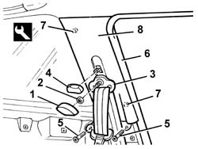
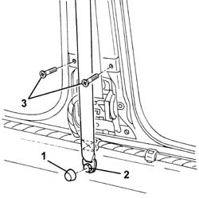
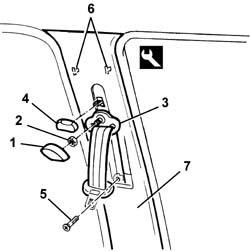

7040H38 central pillar upper element - r r
- Path
- Procedures > 70 FITTINGS > 7040 BODYSHELL INTERIOR TRIMS AND FITTINGS > 7040H roof panel lining > 7040H38 central pillar upper element - r r
- Kind
- repair procedure (removal / refitting; the operation number is the code)
- Applies to
- all engines; all production periods
- Interactive page
- https://sloeber94.github.io/elrnDB-a147/en/#/3025826
Applies to: all engines; all production periods; only with equipment: 3 porte
 Removing
Removing
 Refitting
Refitting7040L40 front compartment scuff strip - r r
7050A22 rear seat cushion - r+r
1. Remove the embellishment.
2. Undo the nut.
3. Move the seat belt mechanism.
4. Remove the knob.
5. Unscrew the bolts
6. Remove the door housing seals near the pillar trim.
7. Release the inner retainers using the special tool.
 | Name | Country |
|---|---|---|
7 | Scraper blade | 1.823.015.000 |
8. Recover the pillar trim.

Applies to: all engines; all production periods; only with equipment: 3 porte
Refitting
RemovingCheck that the pillar trim is not damaged.
Position the pillar trim and fit the inner retainers.
Fit the door housing seal by the pillar trim.
Tighten the screws.
Fit the knob.
Position the seat belt relay and fix it using the nut.
Tighten the nut to the specified torque.
 | Fastening | Component | Ø | Value (daNm) |
|---|---|---|---|---|
- | Nut | FRONT SEAT BELT IDLER | M7/16" | 4.0 |
Fit the trim.
Check that the seat belt slides properly.
Applies to: all engines; all production periods; only with equipment: 5 porte
Removing
Refitting7040H36 central trim lower element - r r
1. Remove the bolt cover.
2. Undo the bolt fixing the end of the front seat belt.
3. Undo the bolts

Applies to: all engines; all production periods; only with equipment: 5 porte
1. Remove the embellishment.
2. Undo the nut.
3. Move the seat belt mechanism.
4. Remove the knob.
5. Unscrew the bolt.
6. Release the inner retainers using the special tool.
| Name | Country |
|---|---|---|
6 | Scraper blade | 1.823.015.000 |
7. Recover the pillar trim.

Applies to: all engines; all production periods; only with equipment: 5 porte
Refitting
RemovingCheck that the pillar trim is not damaged.
Position the pillar trim and fit the inner retainers.
Tighten the trim retaining bolts.
Fit the knob.
Position the seat belt relay and fix it using the nut.
Tighten the nut to the specified torque.
| Fastening | Component | Ø | Value (daNm) |
|---|---|---|---|---|
- | Nut | FRONT SEAT BELT IDLER | M7/16" | 4.0 |
Fit the trim.
Position the end of the front seat belt and tighten the bolt.
| Fastening | Component | Ø | Value (daNm) |
|---|---|---|---|---|
- | Bolt | FRONT SEAT BELT FIXED END | M7/16' | 4.0 |
Fit the bolt cover.
Check that the seat belt slides properly.
Topics linked from this page (4)
- 7040H36 central trim lower element - r r
- 7040H50 rear panel - r r
- 7040L40 front compartment scuff strip - r r
- 7050A22 rear seat cushion - r+r
Topics that link to this page (12)
- 5505C41 cabin wiring - r r
- 5580C40 sidebag sensor (one), lh or rh - r r
- 5580C50 (HEAD- BAG MODULE ) (one), left or right - R.R.
- 7030B12 sliding roof (assembly) - r+r
- 7030B40 drainage channel - r r
- 7030B50 sun roof guide , one , lh or rh - r r
- 7035C52 (One), side WINDOW left or right - R.R.
- 7035C54 side window one lh or rh r r includes cleaning of housing
- 7040H10 roof panel lining - r r
- 7040H16 roof panel lining - r r
- 7065A12 front seat belt (one), lh or rh, with pretensioner on wheel - r r
- 7065A18 Front set belt HEIGHT ADJUSTER , (one), left or right - R.R.